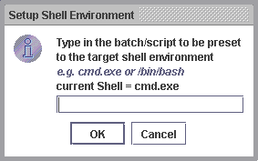

For example, when you need to run some commands/scripts which require different shell environment, you may switch to the target shell before executing the instructions.
Let's look at the following example, suppose our target server is a Linux Machine, in which we have to execute three different commands:
- The first one required to be executed in BASH shell (/bin/bash)
- The second one required to be executed in CSH shell (/bin/csh)
- The third one required to be executed in KSH shell (/bin/ksh)
-
Select "Tools" -> "Command Line", this will brings you to the Command Line Workspace.

- Choose your target server to operate by clicking the "Select Server" button.
-
All the managed server will be loaded into a list box, simply choose your preferred
server, and click "OK" to continue.

-
Next click the "Setup Shell" button, this will open up the "Setup Shell Environment" window,
where you could define target shell.
 - Key-in any preferred shell and click "OK" to apply the new setting. Otherwise click "Cancel" to abort.
- You may then repeat the above steps each time you need to change the default shell.
Related Topics:
|
|
Copyright 2005 © RMIAdmin. All rights reserved. |